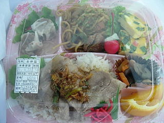

にこちゃん弁当のお弁当
2009/4/22
何種類かのお弁当が販売していたんですが、色々入ったものをチョイスしました。

コンビニ、スーパー、お弁当屋さんとかで販売しているものとは見た目が違いますね。色んなジャンルのものがいっしょになってて面白いです。
メインのお肉なんですが、しっかりとした味のタレが沢山かかってて、お肉を食べたって気分になれました。タレがよくある生姜焼きや、テリヤキ味ではなく、自家製の焼肉のタレっぽい味が独特でいいなって思いました。
普段お弁当を買って食べていないんですが、たまには気分転換にいいかなって思いました。
にこちゃん弁当のコロッケパン
2006/5/26
空揚げパンを買おうと思って行ったら、今日は売ってませんでした。
かわりにコロッケパンが売っていたので、それを買って帰りました。
メニューが変わったのか、日とか季節によって商品が違うのかは分かりませんが、商品が替わるんだったら、飽きにくくていいですね。お弁当以外の商品も替わるんだったら、次行った時に何があるか楽しみです。
コロッケパンは空揚げパンと基本的に同じで、具がコロッケとウインナーになっただけな感じでした。素材の味がちゃんとするシンプルな味です。
お値段も同じ100円で、お買い得な感じも同じです。
にこちゃん弁当のからあげパン
2006/3/11
枝大津に新しく出来てたお弁当屋さんに行ってみました。
小さいプレハブ小屋ににこちゃん弁当って書いてあるだけなので、とっても地味なお店です。
お店の中を外から覗いたら、パンが売ってたので「あ、お弁当以外もあるんだ。パンとかあるなら気軽に入れていいな。」って思って入ってみました。
から揚げパンはなんと100円でした。大きさも大きく、から揚げが多く入ってたのでとってもお買い得でした。（コンビニだったらから揚げだけで、100円以上な感じです。）
あと、スイートポテトを買ったんですが、こっちも安くて２個100円でした。
味は両方とも、素直な感じで、素材の味を生かした感じになってました。変に凝ったものではないので食べやすくてよかったです。
ちょっと気にいったので、今度はお弁当を買いに行こうと思います。